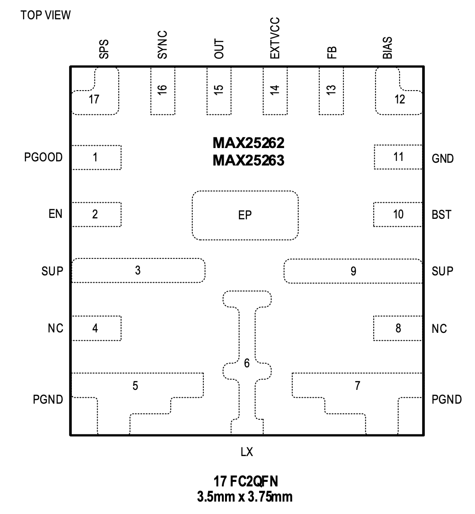

MAX25262 / MAX25263

Pin Description
| PIN | NAME | FUNCTION |
|---|---|---|
| 1 | PGOOD | Open-Drain Output. Pull up PGOOD with an external resistor connected to a positive voltage lower than 5.5V. PGOOD is high impedance when OUT is in regulation. |
| 2 | EN | Supply (SUP) Voltage Tolerant, Active-High Digital Enable Input for the Converter. |
| 3,9 | SUP | Supply Input. Internal high-side supply powers the internal switch and LDO. Each SUP pin needs 2.2µF bypass capacitors and 0.1µF ceramic capacitors connected to them. The 0.1µF capacitor needs to be as close to the SUP pin as possible, followed by the 2.2µF capacitor. |
| 4,8 | NC | No Connect. Do not route through these pins. |
| 5,7 | PGND | Power Ground. Connect all PGND pins together. |
| 6 | LX | Inductor Connection. Connect LX to the switched side of the inductor. |
| 10 | BST | Bootstrap Capacitor Connection. Connect a ceramic capacitor of 0.1µF between BST and LX. |
| 11 | GND | Analog Ground |
| 12 | BIAS | Linear Regulator (LDO) Output. BIAS powers the internal circuitry. Bypass with a minimum of 2.2μF ceramic capacitor to ground. |
| 13 | FB | Feedback Input. For external feedback, connect a resistor-divider from OUT to FB to GND to set the output voltage. Connect FB to BIAS to select a fixed output voltage (P/N dependent). |
| 14 | EXTVCC | External VCC Power and Switchover Comparator Input. Connect a voltage between 3.25V and 5.5V to EXTVCC to power the IC and bypass the internal bias LDO. Connect EXTVCC to ground if not used. |
| 15 | OUT | Output Sense Input. When using the internal preset feedback divider, FB is connected to BIAS, and the converter uses OUT to sense the output voltage. |
| 16 | SYNC | External Clock-Synchronization Input. Connect FSYNC to GND to enable Skip mode. Connect FSYNC to BIAS or an external clock to enable Forced-PWM mode. The SYNC input cannot exceed the BIAS voltage when driven externally. |
| 17 | SPS | Spread-Spectrum Enable Input. Connect to BIAS to enable spread spectrum. Connect to GND to disable spread spectrum. |
| - | EP | Exposed Pad. Connect to the input supply voltage along with pins 3 and 9. |